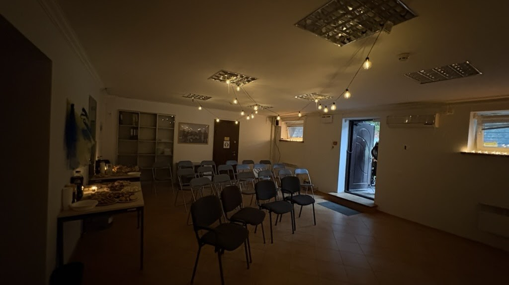
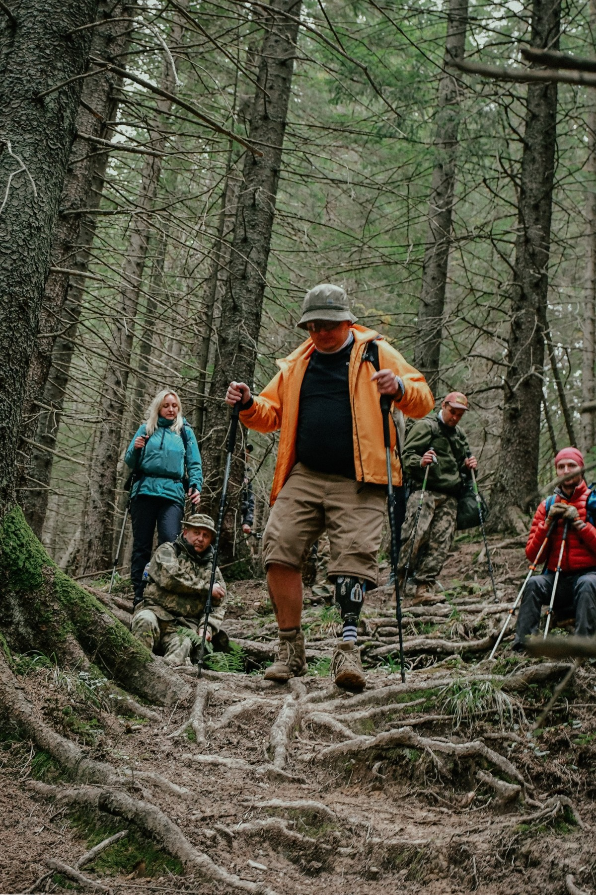
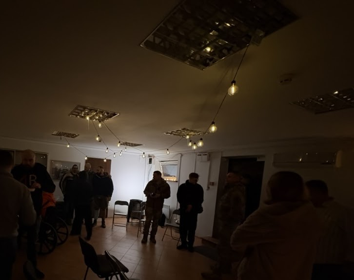
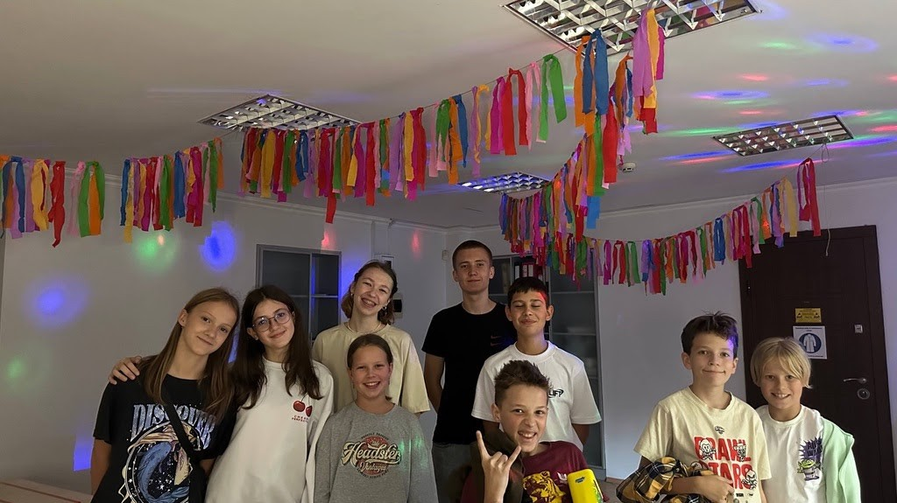
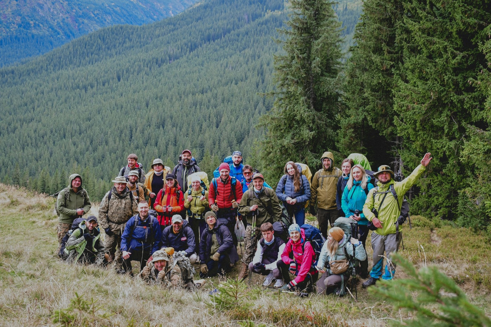

Простір BRAVO оживає
Вітаю, друзі! Цей місяць став для нас особливим. Ми нарешті побачили, як простір BRAVO оживає — після довгих місяців ремонту, пошуків меблів і організаційних справ — і почали проводити перші події.

Підліткові зустрічі, похід у гори з ветеранами і вечір до Дня захисників і захисниць України.
Гори і ветерани

«Зводжу свої очі на гори, — звідки прийде мені допомога? Допомога моя — від Господа, що вчинив небо й землю!»
— Псалом 121:1–2
Цього місяця я був у горах разом із ветеранами та військовослужбовцями. Це показало, наскільки важливі подібні активності для людей, що пройшли війну: такі поїздки допомагають розвантажитись емоційно й фізично, побути серед природи та відчути спокій.
У поході були також цивільні, які супроводжували групу, і це стало гарною можливістю для взаєморозуміння й реінтеграції військових у суспільство. Усі залишились дуже задоволені: не було тиску чи обмежень, лише вільний час, природа й розмови.
Чув багато відгуків про важливість ретритів для військових і їхніх сімей. Люди говорили, що це дуже цінно, і не так важливо, віруючі вони чи ні — головне, коли є щирість, повага й спокійна атмосфера без тиску.
Ветеранські вечори

«Немає більшої любови над цю, як хто свою душу поклав за друзів своїх!»
— Івана 15:13
У жовтні ми провели зустріч у просторі BRAVO, присвячену Дню захисників і захисниць України. Розпочали з хвилини мовчання в пам'ять про полеглих, коротко розповіли про сам простір і команду, а тоді кожен мав можливість поділитися кількома словами про себе.
Була також можливість послухати слово від пастора про вдячність і силу віри навіть у непростих обставинах. Атмосфера була дуже тепла — без формальностей, просто людське спілкування, жарти, кава, розмови.
Багато хто відзначив, що це був потрібний час, щоб відчути підтримку і згадати, що ми не одні у своїх переживаннях. Того дня в організації дещо йшло не так, як планувалося, але попри це ми змогли реалізувати зустріч — і це ще одне свідчення того, що потрібно довіряти Богу попри все.
Місяць у BRAVO

Особливо радію, що змогли запустити регулярні зустрічі для підлітків — дітей військових. Для них ми створили безпечний простір, де можна просто бути собою: грати, спілкуватися, розмірковувати про віру і життя.

Кілька кадрів з походу — часу, коли ветерани й цивільні просто були поруч, без тиску й очікувань, серед природи.
Молитовні потреби
- •За подальше облаштування простору — меблі, техніку, освітлення.
- •За команду — щоб ми могли служити з любов'ю і терпінням.
- •За військових, які приходять — щоб знаходили тут мир і надію.
- •За нові контакти — з громадами, партнерами і волонтерами.
«А ті, хто на Господа склали надію, свою силу відновлять, крила підіймуть, немов ті орли»
— Ісаї 40:31
Олександр Килюшик
З благословенням у Христі
Служіння серед військових · Місія «Україна для Христа»